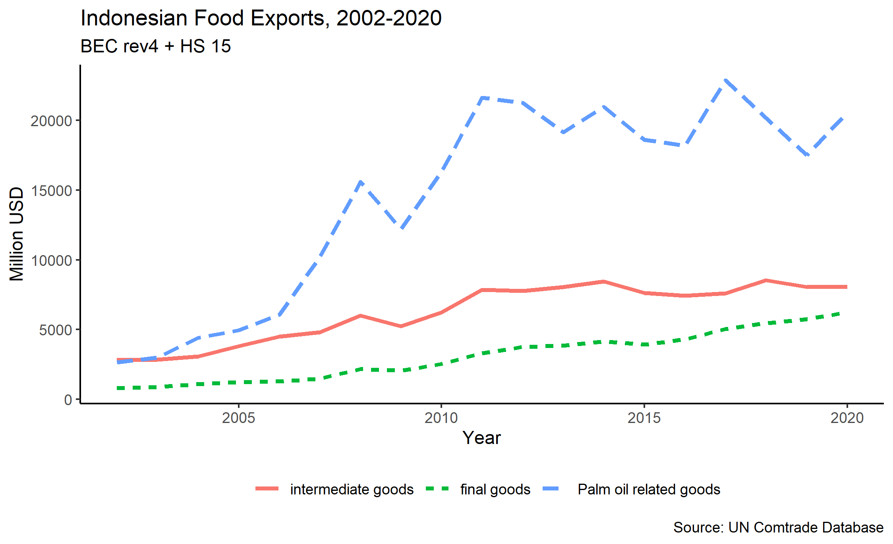

flowchart LR A(Anggaran) --> B(Kebijakan) --> C(industry performance)
Kompleksitas Kinerja Industri Agro
Krisna Gupta
14 November 2022
I Made Krisna

Sering dipanggil Imed
Full-time lecturer di Politeknik APP
Part-time lecturer di Universitas Indonesia
Master degree in economics UI/VU
PhD in economics di Australian National University
- thesis tentang industri dan perdagangan di Indonesia.
Associate researcher di Center for Indonesian Policy Studies.
- Policy paper terakhir tentang GVC di industri makanan
Selengkapnya di imedkrisna.github.io
- blog di krisna.or.id
- twitter di @imedkrisna
akses slide ini, scan QR di atas atau pergi ke s.id/djiagro
Topik diskusi
Anggaran vs “Kinerja”.
Rethinking trade: GVC in Food.
Rethinking trade: asset market dominance.
Anggaran & Kinerja
| Case | Dependent var | Independent var |
|---|---|---|
| 1 | PDB Mamin (Milyar IDR) | Pagu Ditjen IA (Milyar IDR) |
| 2 | PDB Mamin (Milyar IDR) | Realisasi Ditjen IA (Milyar IDR) |
| 3 | PDB Mamin (Milyar IDR) | Case 1 + PDB Perkebunan (Milyar IDR) |
| 4 | PDB Mamin (Milyar IDR) | Case 2 + PDB Perkebunan (Milyar IDR) |
Metode
| OLS | Log-log OLS | ARDL | |
|---|---|---|---|
| Spec | \(Y=X\beta\) | OLS tapi log | ARDL(1) |
| Heteroskedasticity | v | - | - |
| Spurious correlation | v | v | - |
| (Probably) No causality | v | v | kinda |
See Woolridge (2009), Pesaran & Smith (1995) for method.
OLS
log-log OLS
ARDL(1)
Diskusi
Dengan OLS, anggaran DJIA \(\uparrow\) \(\Rightarrow\) PDB Agro \(\downarrow\)
Korelasi hilang ketika PDB sektor perkebunan masuk
Bisa jadi spurious (problem standar data time series)
ARDL dapat mengatasi spurious, tapi:
Tetap tidak menemukan korelasi & kointegrasi antar-keduanya.
Seriesnya kurang panjang.
Kemungkinan
Anggaran agro terlalu kecil untuk berdampak, apalagi dibandingkan:
- PDB global, produktivitas hulu, kebijakan perdagangan, investasi, climate change, dst.
Mengukur dampak kebijakan mungkin lebih penting; baru setelah itu bicarakan berapa anggaran untuk menjalankan kebijakan tsb.
e.g., berapa anggaran yang diperlukan untuk mengurangi waktu perizinan dari 2 minggu jadi 3 hari.
Definisi performance
PDB sebuah industri sangat dipengaruhi oleh berbagai hal \(\rightarrow\) possible cherrypicking.
Pilih indikator yang berdampak langsung, baru kaitkan indikator tersebut dengan PDB.
Share PDB generally not the best: direct competition with other institution?
Consider looking at welfare: nutrisi, aksesibilitas, iklim, etc.
Beberapa contoh
Pentingnya GVC dan Lead-firm model on coffee & cacao (Neilson, Dwiartama, Fold & Permadi 2020; Vicol, Neilson, Hartatri & Cooper 2018).
Structural break dari trade policy & sudden investment in seaweed (Langford, Zhang, Walrdron, Julianto, Sirajuddin, Neish, & Nuryantono 2022)
Unsustainable export ban in the plywood manufacturing (Thee 2012)
Ke depan
Fokus. Good to build a specialization.
sub-sektor tertentu bisa jadi punya kasus unik.
Sesuaikan dengan tujuan program.
Manfaatkan tugas belajar.
Data.
Rethinking trade: Palm oil & GVC
Peran Rantai Pasok Global
GVC punya value extra di F&B ketimbang manufaktur lain.
Iklim dan geografi mengakibatkan tiap negara memiliki keunggulan yang berbeda-beda.
ada yang cocok tanam sawit, tebu, menggembala sapi, dan lain sebagainya.
Garam: nelayan vs penambang?
Kombinasi gizi dari berbagai jenis pangan dari berbagai belahan dunia.
Kombinasi rasa: oplos kopi, kakao, dst.
Global Value Chain of Nutella

GVC of Nutella (Scoppola, 2021)
Peran Rantai Pasok Global
Perusahaan yang mampu manage rantai pasok yang kompleks akan lebih kompetitif.
Negara yang memiliki kebijakan perdagangan yang pasti punya advantage
Perjanjian perdagangan adalah modal penting:input & market.
Negara yang mengandalkan GVC akan mengejar perjanjian dagang secara agresif.
RCEP akan memihak negara yang dapat memanfaatkan rantai pasok global.
Some evidence
GVC memberikan peningkatan produksi, lapangan pekerjaan, dan meningkatkan investasi di banyak negara (World Bank, 2020).
Di Indonesia, keterlibatan GVC memberi dampak yang baik terhadap produktivitas, employment dan ekspor
(Amiti & Davis, 2012; Amiti & Konings, 2007; Gupta, 2021; Kis-katos, Janneke & Sparrow, 2018; Kis-katos & Sparrow, 2015; Pane & Patunru, 2022; Rahardja & Varela, 2015)
- Di Industri pangan Indonesia, backward GVC participation melalui impor produk hulu meningkatkan ekspor produk hilir (Amanta & Gupta, 2022)

Elephant in the room
Industri pengolahan kelapa sawit memiliki peranan yang sangat besar di struktur ekspor Indonesia.
Buah sawit memang merupakan komoditi perkebunan, harganya berfluktuasi.
Namun, minyak nabati sendiri masuk kategori manufaktur dgn KBLI heading 10.
Pertumbuhan industri pangan sendiri sangat dipengaruhi performa minyak sawit.
Dominasi vegetable oil
CPO vs no CPO

Industri sawit?
Ketergantungan sawit dapat memberi bias analisis pada industri makanan.
Sebagai eksportir sawit, nilai tambah asing memiliki peran yang tidak besar.
Akibatnya kita akan mengira impor di F&B tidak penting.
Industri makanan jadi dengan nilai tambah lebih besar sangat mengandalkan rantai pasok global.
Analisis untuk turunan sawit dan industri pangan secara umum harus dilakukan secara terpisah.
Kebijakan RPJMN
Pemerintah menargetkan pengurangan impor di sektor mamintem.
counter-intuitive dengan evidence & nature industri.
tidak sesuai dengan semangat RCEP maupun G20.
Mengurangi impor bahan baku pangan = meningkatkan ketergantungan pada sawit.
Fokus pada sawit: tingkatkan produktivitas & nilai tambah, isu lingkungan membatasi pasar.
Fokus sawit vs diversifikasi dengan GVC.
Transformasi struktural
Pemerintah ingin meningkatkan proses transformasi ekonomi ke arah manufaktur.
- secara proporsi, artinya agrikultur dan low value added services akan turun.
Faktor produksi akan pindah ke manufaktur: tenaga kerja, tanah, modal.
expect relative reduction in agriculture production.
manufaktur butuh input: gap-nya akan diisi impor.
Rethinking trade: Global Asset Market
Short reminder
Aritmatika neraca pembayaran: Jika neraca berjalan surplus, maka harus diimbangi dengan neraca modal/finansial.
Artinya, trade surplus harus diimbangi dengan defisit perdagangan jasa & transfer, atau oleh foreign asset.
Model ekonomi terbuka: \(Y=C+I+G+(X-M)\)
Jika Y-C-G adalah saving, maka:
\[S-I=X-M\]
Short reminder
Trade surplus = uangnya disimpan dalam klaim internasional. Terjadi bila:
eksportir menyimpan uang di luar negeri.
Bank sentral sibuk menyerap reserves
China: hoarding klaim USD (mostly dalam bentuk T-bill). Why?
Profit flows to firms / rich people who invest abroad.
Central bank hoarding reserves + currency manipulation.
Global imbalance
Teori mengatakan bahwa negara yang surplus terus akan mengalami apresiasi mata uang \(\rightarrow\) ekspor jadi mahal, impor jadi murah \(\rightarrow\) surplus berkurang.
Tapi (1) dominasi USD di global finance (2) bubarnya perjanjian bretton woods berdampak besar:
Negara surplus tinggal menukar dolar kembali ke aset AS seperti T-bill.
tanpa terbelenggu ketersediaan emas, dolar bisa dicetak terus -> T-bill bisa dicetak terus.
Jepang & China -> 2 negara dengan USD reserves terbesar, adalah juga 2 negara paling “kompetitif”

BigMac Index, The Economist
Comparative advantage
Comparative advantage: lebih efisien jika kita ekspor sesuatu yang kita pintar bikin, dan beli sesuatu yang kita tidak pintar bikin.
Trade surplus = kita jual aja tapi tidak beli apa-apa.
Baik bila kita nabung, seperti SWF-nya Saudi dan Norway.
Buruk bila yang nabung elites, tapi penduduknya kekurangan nutrisi.
Ekspor = warganya sendiri tidak sanggup beli.
Ekspor sebagai performa?
Global imbalance membuat ekspor menjadi sulit digunakan sebagai performa.
asset market is more influential in driving trade.
Goods needs to be produced, investment in capital & education takes time.
Debt, especially in USD & Euro, can be generated easily.
Capital market is very fluid: you can trade in literal seconds.
Ke depan
Pertumbuhan China mulai goyah, apalagi yang didorong dengan investasi.
Beberapa investasi tersebut mulai goyah dan flop (BRI, property, infrastruktur, dst)
Bisa jadi masa depannya mirip Jepang sekarang
Banyak pengamat saat ini makin bearish terhadap China, apalagi kondisi geopolitik makin tidak menentu.
Tapi sepertinya dedolarisasi masih belum akan terjadi, kecuali mungkin China ingin membuka capital account mereka dengan bebas seperti AS.
Kesimpulan
Hal-hal yang mempengaruhi pertumbuhan PDB dan ekspor industri agro sangat banyak dan kompleks.
Kondisi-kondisi di atas membuat melihat performa industri agro sulit dilacak, apalagi dikaitkan dengan anggaran dan kewenangan DJIA.
Indikator-indikator tersebut perlu diperhatikan, namun hati-hati mengaitkannya dengan DJIA.
Sebaiknya memiliki indikator yang lebih direct, baru kaitkan indikator tersebut ke Agro.
Thank you & looking forward to discussions, untuk industri agro yang semakin maju.
References
Alta, A., Setiawan, I., & Fauzi, A. N. (2021). Beralih dari subsidi pupuk dan benih: mengkaji ulang bantuan untuk mendorong produktivitas dan persaingan di pasar input pertanian. CIPS Policy Paper, 43. cutt.ly/cips-mk43
Amanta, F., & Gupta, K. (2022). Perdagangan untuk pemulihan ekonomi: kebijakan impor untuk mendukung sektor makanan dan minuman Indonesia. CIPS Policy Paper. cutt.ly/cips-mk51
Amiti, M., & Konings, J. (2007). Trade Liberalization, Intermediate Inputs, and Productivity: Evidence from Indonesia. The American Economic Review, 97(5), 1611-1638. https://doi.org/10.1257/000282807783219733
Amiti, M., & Davis, D. R. (2012). Trade, Firms, and Wages: Theory and Evidence. The Review of Economic Studies, 79(1), 1-36. http://www.jstor.org.virtual.anu.edu.au/stable/41407043
Gupta, K. (2022). The Heterogenous Impact of Tariff and NTM on Total Factor Productivity of Indonesian Firms. Bulletin of Indonesian Economic Studies, 1-29. https://doi.org/10.1080/00074918.2021.2016613
Ing, L. Y., Yu, M., & Zhang, R. (2019). The evolution of export quality: China and Indonesia. In L. Y. Ing & M. Yu (Eds.), World Trade Evolution: Growth, Productivity, and Employment. (pp. 261-302). Routledge.
Kis-Katos, K., Pieters, J., & Sparrow, R. (2018). Globalization and Social Change: Gender-Specific Effects of Trade Liberalization in Indonesia. IMF Economic Review, 66(4), 763-793. https://doi.org/http://dx.doi.org/10.1057/s41308-018-0065-5
Kis-Katos, K., & Sparrow, R. (2015). Poverty, labor markets and trade liberalization in Indonesia. Journal of Development Economics, 117, 94-106. https://doi.org/https://doi.org/10.1016/j.jdeveco.2015.07.005
Pane, D. D., & Patunru, A. A. (2022). The role of imported inputs in firms’ productivity and exports: evidence from Indonesia. Review of World Economics. https://doi.org/10.1007/s10290-022-00476-z
Rahardja, S. & Varela, G.J. (2015). The Role of Imported Intermediate Inputs in the Indonesian Economy. World Bank Policy Note 3
Scoppola, M. (2021). Globalisation in agriculture and food: the role of multinational enterprises. European Review of Agricultural Economics, 48(4), 741-784. https://doi.org/10.1093/erae/jbab032
World Bank. (2020). World Development Report 2020 : Trading for Development in the Age of Global Value Chains. Washington, DC: World Bank.